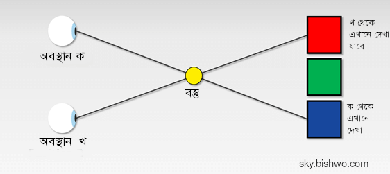
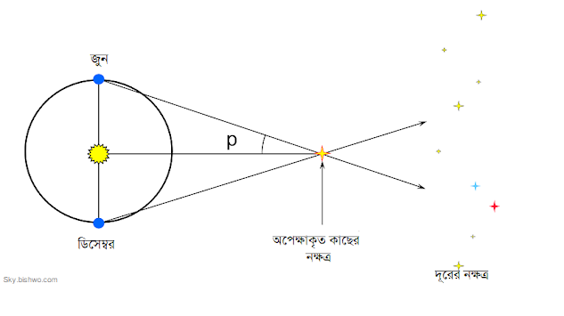
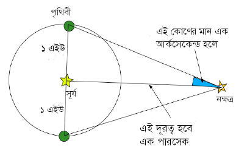

নক্ষত্রের দূরত্ব বের করা হয় কীভাবে?
মহাকাশের বস্তুদের দূরত্ব নির্ণয় জ্যোতির্বিদ্যার অন্যতম বড় একটি সমস্যা। আকাশের দিকে খালি চোখে তাকিয়েই তো আর তারাদের দূরত্ব সম্পর্কে ধারণা পাওয়া যায় না। এ কারণেই প্রাচীন জ্যোতির্বিদরা ভাবতেন, আকাশের সবগুলো তারা পৃথিবী থেকে একই পরিমাণ দূরত্বে একটি গোলকীয় পৃষ্ঠে বসানো আছে।
নক্ষত্রের দূরত্বের মাপার ক্ষেত্রে কাজে লেগেছে টেলিস্কোপ- তাও নিকটবর্তী নক্ষত্রদের দূরত্ব নির্ণয়ের ক্ষেত্রে। পদ্ধতিটির নাম প্যারালাক্স বা লম্বন (Parallax)। নক্ষত্রের দূরত্বের একক পারসেক এসেছে এ শব্দটা থেকেই। এক পারসেক = ৩.২৬ আলোকবর্ষ।
প্যারালাক্স বুঝতে হলে হাতের সামনে একটি আঙ্গুল ধরুন। এক চোখ বন্ধ করে এর দিকে তাকান। এবার আরেক চোখ খুলে এই চোখ বন্ধ করে আঙ্গুলের দিকে তাকান। কী ঘটছে? ব্যাকগ্রাউন্ডের সাপেক্ষে আঙ্গুলের অবস্থান বদলে যাচ্ছে। অবস্থানের এই বিচ্যুতির কৌণিক হিসাবকেই প্যারালাক্স বলে। আঙ্গুলের বদলে আরো দূরের কোন বস্তুর ক্ষেত্রে একই পরীক্ষা চালালে দেখা যাবে যে দুই চোখের দেখা অবস্থানের পার্থক্য তথা প্যারালাক্সের মান কমে যাচ্ছে।

এখন, নক্ষত্রদের দূরত্ব নির্ণয়ের জন্যে আমরা এই প্যারালাক্স পদ্ধতি প্রয়োগ করতে পারি। কিন্তু উপরে যেমন বললাম, বস্তুর দূরত্ব বেশি হলে কৌণিক বিচ্যুতিও কম হবে। নক্ষত্রের দূরত্ব বের করার জন্যে পৃথিবীর দুইটি আলাদা জায়গা থেকে একে দেখে নিয়ে ত্রিকোণমিতি কাজে লাগিয়ে দূরত্ব বের করা সম্ভব। এক্ষেত্রে পৃথিবীর আলাদা জায়গা দুটি দুই চোখের মত কাজ করবে। কিন্তু সমস্যা হচ্ছে, নক্ষত্ররা পৃথিবী থেকে এত বেশি দূরে যে এদের প্যারালাক্সের মান হয় খুবই সামান্য। ফলে খুব ভাল মান পাওয়া যায় না।
এ সমস্যার সমাধানের জন্যেও পথ বের করেছেন বিজ্ঞানীরা। পৃথিবী বছরে এক বার সূর্যকে প্রদক্ষিণ করে। ফলে সূর্যের চারদিকের উপবৃত্তাকার কক্ষপথে পৃথিবী ৬ মাস পর পর বিপরীত বিন্দুতে পৌঁছায়। এই দুই বিপরীত অবস্থান থেকে অপেক্ষাকৃত নিকটবর্তী নক্ষত্রের প্যারালাক্সের ভালো মান পাওয়া যায়।

যেমন চিত্রে দেখা যাচ্ছে জুন ও ডিসেম্বর মাসে পৃথিবী কক্ষপথের ঠিক বিপরীত প্রান্তদ্বয়ে থাকে। এই দুই বিন্দুতে কোন নক্ষত্র যে কোণ তৈরি করবে তার অর্ধেকই হল প্যারালাক্স (চিত্রে কোন p)।

এই পদ্ধতিটিও শুধু কাজ করবে পৃথিবী থেকে অপেক্ষাকৃত নিকটবর্তী তারকাদের ক্ষেত্রে। আরো দূরের তারকা বা অন্য কোন বস্তুদের ক্ষেত্রে প্যারালাক্সের মান অনেক কমে যাবে বিধায় ভাল হিসাব পাওয়া যাবে না।
পারালাক্স পদ্ধতি দিয়ে পৃথিবী থেকে সর্বোচ্চ ৪০০ আলোকবর্ষ দূরের তারার দূরত্ব মাপা যায়। আরও দূরের তারার দূরত্ব মাপার সরাসরি কোনো উপায় নেই। তবে নক্ষত্রের রঙ ও উজ্জ্বলতার সম্পর্ক কাজে লাগিয়ে দূরত্ব জানা যায়। রং থেকে জানা যায় প্রকৃত উজ্জ্বলতা বা দীপ্তি। নক্ষত্রের আলো পৃথিবীতে আসতে আসতে সে উজ্জ্বলতা নিয়ম মেনে কমে। সে নিয়মটা হলো বিপরীত বর্গীয় সূত্র। আর এটা থেকেই জানা যায় নক্ষত্রের দূরত্ব। ছায়াপথের দূরত্ব মাপতেও প্রায় একই ধরনের ধারণা ব্যবহার করা হয়। সৌরজগতের গ্রহ বা সূর্য তো আরও অনেক কাছে। ফলে প্যারালাক্স দিয়েই এদের দূরত্ব বেশ ভালোভাবেই পাওয়া যায়।
{kind=link}